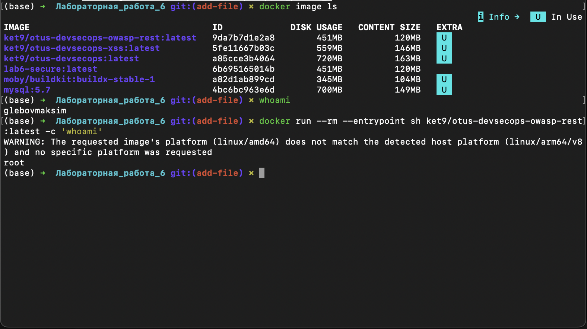
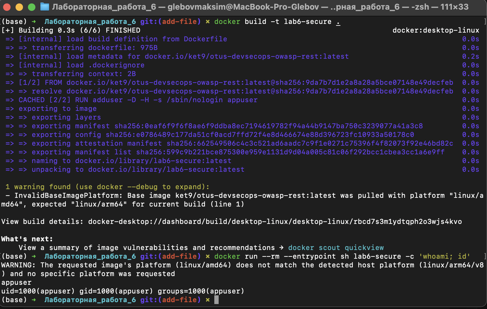

Тема: базовая настройка безопасности Docker-контейнера.
Для работы я выбрал образ:
ket9/otus-devsecops-owasp-rest:latestСначала посмотрел локальные образы:
docker image lsНа машине уже были образы ket9/otus-devsecops-owasp-rest, ket9/otus-devsecops-xss, ket9/otus-devsecops и mysql:5.7.
До запуска контейнера выполнил:
whoamiРезультат:
glebovmaksimПотом проверил пользователя внутри контейнера:
docker run --rm --entrypoint sh ket9/otus-devsecops-owasp-rest:latest -c 'whoami'Результат:
rootВывод: базовый контейнер запускается от пользователя root, это небезопасно.

Я написал Dockerfile на основе выбранного образа:
FROM ket9/otus-devsecops-owasp-rest:latest
RUN adduser -D -H -s /sbin/nologin appuser
USER appuser
EXPOSE 8080Полный файл лежит рядом с отчетом:
DockerfileСобрал образ:
docker build -t lab6-secure .Проверил пользователя внутри нового контейнера:
docker run --rm --entrypoint sh lab6-secure -c 'whoami; id'Результат:
appuser
uid=1000(appuser) gid=1000(appuser) groups=1000(appuser)Вывод: теперь контейнер запускается не от root.

Для проверки я использовал Trivy:
trivy image --scanners vuln --severity HIGH,CRITICAL --ignore-unfixed \
ket9/otus-devsecops-owasp-rest:latestКраткий результат:
| Уровень | Количество |
|---|---|
| HIGH | 62 |
| CRITICAL | 8 |
| Всего | 70 |
По целям:
| Цель | Количество |
|---|---|
| Alpine 3.14.2 | 56 |
| Python packages | 14 |
Trivy также показал предупреждение, что Alpine 3.14.2 больше не поддерживается. Значит, для этой версии уже не выпускаются security updates, и использовать такой образ в production нельзя.
Примеры найденных уязвимостей:
CVE-2021-42378 в busybox;CVE-2022-22822 в expat;CVE-2023-30861 в Flask;PyJWT, Werkzeug, setuptools, urllib3.Исходный контейнер запускался от root, поэтому я собрал новый образ с пользователем appuser. Это снижает риск, если приложение внутри контейнера будет скомпрометировано.
Сканирование Trivy показало, что выбранный образ небезопасен: старая Alpine 3.14.2 уже не поддерживается, а в системных и Python-пакетах есть 70 уязвимостей уровня HIGH и CRITICAL.
Что нужно сделать для улучшения:
--read-only, --cap-drop ALL, no-new-privileges;